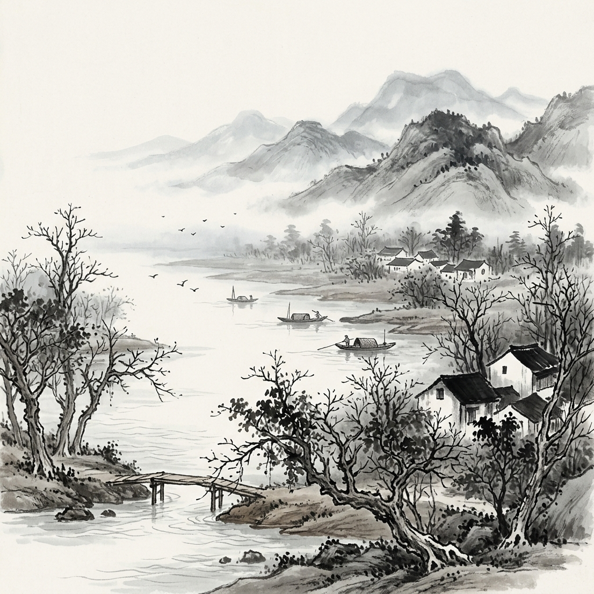
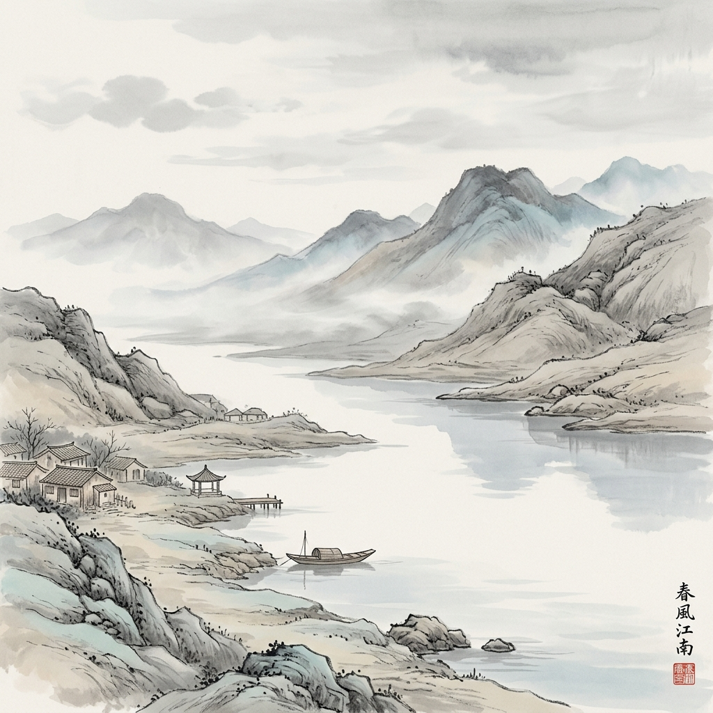
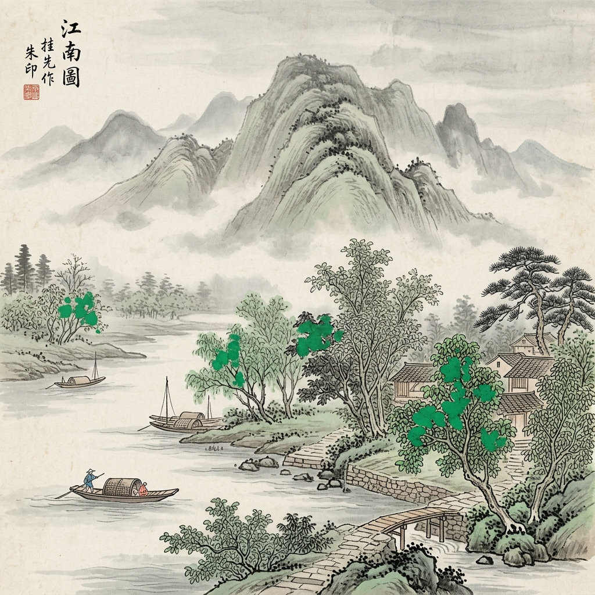
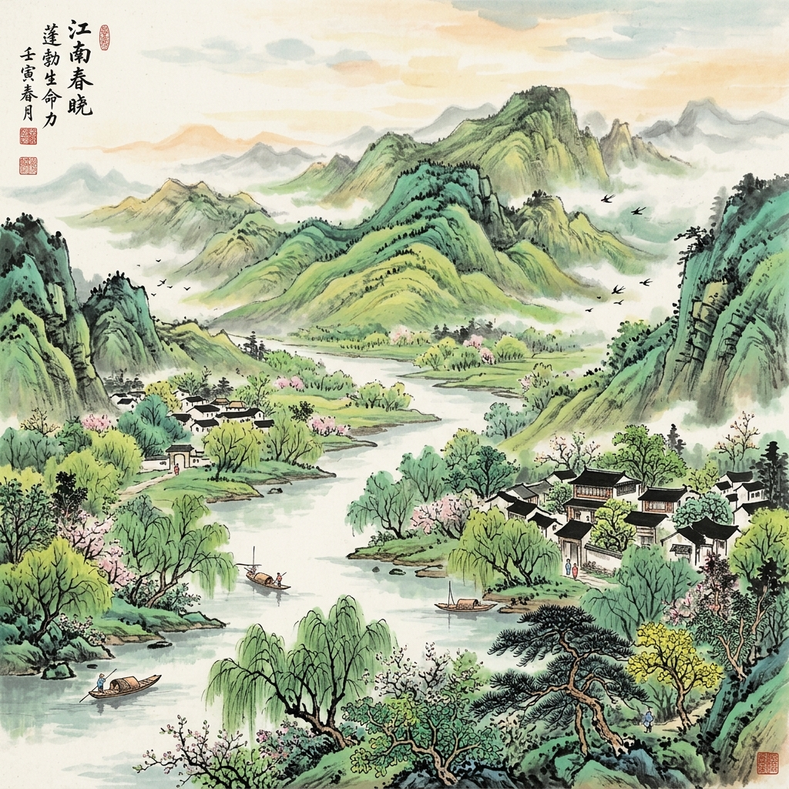
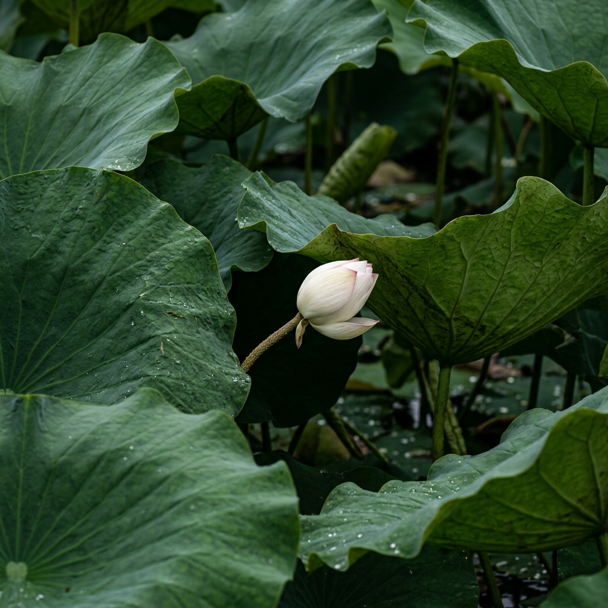

一字定乾坤：汉字“炼字”的AI视觉呈现
三年3班 任程锦
保持语句不变 · 替换 1 个核心动词 · 解锁汉字里的“视觉密码与生命光谱”
【研究假设与方法】
古人作诗讲究“推敲”，名家写景注重“炼字”。如果把 AI 当作“语感显像仪”，保持其他词句完全不变，仅替换 1 个核心动词，画面会发生什么质变？汉字里到底藏着怎样的“视觉密码”？
古典名篇《泊船瓜洲》的“动词色谱”实验
王安石 [宋]
4张横向对比矩阵
控制原句
京口瓜洲一水间，钟山只隔数重山。春风又【
绿
】江南岸
* 仅替换动词，AI Prompt提示词其他环境参数严格一致

✍️ 有风声无春色，画面清冷
“吹”
字
第2阶
只有水面波纹，树木枯淡，缺乏色彩与生机。
江面波纹微荡

✍️ 如同走马观花，缺乏情感温度
“过”
字
第1阶
江南岸边机械位移，画面平静，无草木萌发生机。
风痕平直掠过

✍️ 着色虽有，但呆板如膏药点染
“染”
字
第2阶
像油漆刷色，局部生硬变色，分布不自然。
块状生硬色斑

✍️ 形容词作动词，生机瞬间铺满江岸！
“绿”
字
第3阶·胜出
满山遍野草木返青、生机盎然、春光漫延至天际！
漫野翠色连天
🔍【显微镜拉线批注·诗境探微】
王安石初改“到、过、入、满、染”等十余字，最终定为“绿”。
AI 显像证明：“绿”字将形容词活用为动词，不仅赋予了画面极致的【色彩扩散感】，更注入了草木萌发的【时间与生命力】！
💡 一字唤醒整个江南的春天：从静态物理描述跨越到扑面而来的生命律动。
统编教材《荷花》（叶圣陶）的“动态张力”实验
叶圣陶
3张横向对比矩阵
控制原句
白荷花在这些大圆盘之间【
冒
】出来。
* 仅替换动词，AI Prompt提示词其他环境参数严格一致
✍️ 慢条斯理，看不出生命蓬勃之势
“长”
字
第1阶
荷花静止平淡地立在叶间，缺乏生命冲劲与动态。
挺立但无动感

✍️ 有动作但显费力犹豫，气势不足
“钻”
字
第2阶
荷花从缝隙探头，小心翼翼，略显局促试探。
斜出窄缝探头
✍️ 破叶而出的爆发力，水珠飞溅的瞬间动能！
“冒”
字
第3阶·胜出
破叶而出、带出水花与露珠、向上昂扬迸发的爆发力！
破水昂扬水珠飞溅
🔍【显微镜拉线批注·语感解码】
课后探究题：“体会‘冒’字好在哪里？想一想荷花是怎样冒出来的？”
AI 显像证明：“长”字呆板无奇，“钻”字小心试探，唯有“冒”字让画面瞬间产生【向上破局的动能】与【昂扬生命力】！
💡 不仅写出了长势之快，更写出了荷花争相展示生机、充满灵性的勃勃生机。